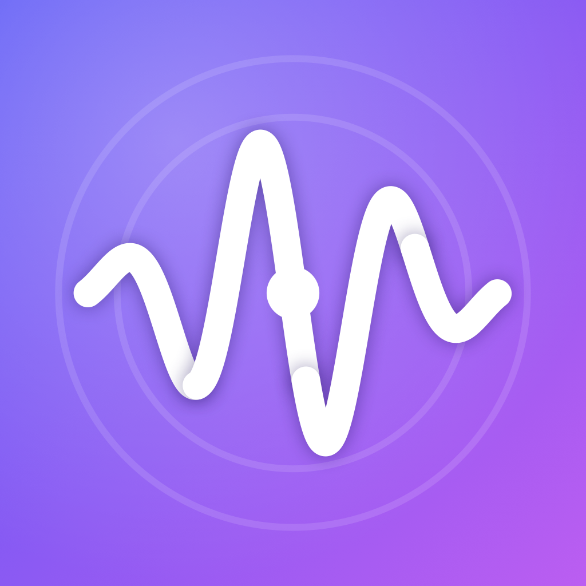

Design and feel custom iPhone haptic patterns on a visual timeline — then export AHAP or Swift.
Tap an event to feel it. Drag a slider and feel intensity and sharpness change under your finger, live on the device.
Compose transient taps and continuous rumbles, with intensity and sharpness automation curves.
Ship a ready-to-bundle .ahap, or copy generated Swift that builds the CHHapticPattern in code.
Bring in existing AHAP files — Tactile preserves anything it doesn't yet edit so your files round-trip intact.
Design distinguishable haptic cues and test them with a blind A/B/X comparison.
Requires an iPhone with a Taptic Engine, and never fakes the feel.
Need help, found a bug, or have a feature request? I'd love to hear from you.
Email: hello@vijaysharma.ca